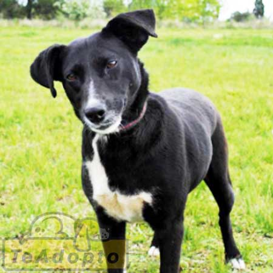

Mascotas en adopción
LUNITA EN ADOPCIÓN.
Ya está desparasitada y vacunada.
MUCCA EN ADOPCIÓN.
Es un perrito hermoso de apenas 1 o 2 años, ya está castrado, vacunado y desparasitado.
LIONEL EN ADOPCIÓN.
Tiene 3 meses y medio,está desparasitado y con las vacunas al día.
MESSI EN ADOPCIÓN.
PIPI BUSCA CASA O TRÁNSITO CON POSIBLE ADOPCIÓN.
Es lo que todos buscan, un perrito tamaño pequeño que hace sus necesidades fuera y es la mejor compañia que existe
VEN A CONOCER A RITA.
Tiene aprox. 1 año y medio, es tamaño mediano, tirando a pequeño, sabe hacer sus necesidades afuera. Es la compañia perfecta

LORENZA EN ADOPCIÓN.
Tiene aprox 2 años, ya está castrada y es tamaño mediano
MIKE SIGUE EN ADOPCIÓN.
AURORA YA ESTA CASTRADA.
¡NECESITAMOS TRANSITO O ADOPCIÓN!.